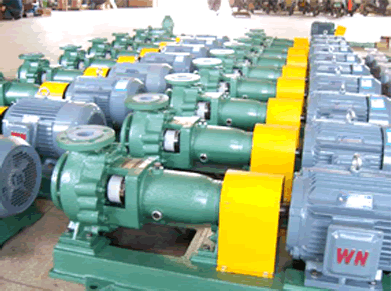

河北奥拓泵业有限公司是一个是集研发、设计、制造、营销、服务为一体的国内大型水泵专业制造企业，拥有多年水泵研发制造的成功经验。公司先后开发了多级泵、离心泵、污水泵、化工泵、泥浆泵、清水泵等系列产品。 并且我厂可向电力、石化、冶金、矿山、水利、城建、环保、交通、轻工等国民经济各部门提供多个品种的产品及配件，且可根据用户特殊需要随时开发新产品。
河北奥拓泵业有限公司拥有雄厚的技术实力、完善的生产设备、严格的质量检验体系，竭诚为广大客户提供全方位的服务。公司将继续以“科学发展观”为理念，以争做水泵产业领跑者为目标，致力于提高产品质量并不断改进从而扩展产品种类，进一步增强市场竞争力，满足各位客户的需求。